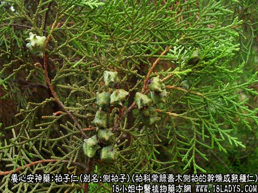
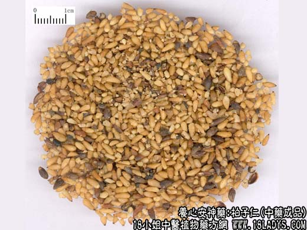
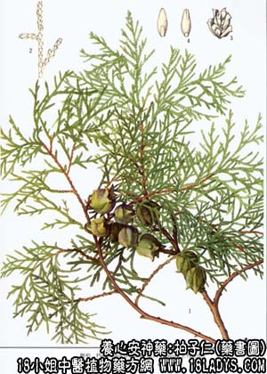

柏子仁为较常用中药。始载《神农本草经》，列为上品。
来源：为柏科植物常绿色乔木侧柏的干燥成熟种仁。野生或栽培。
产地：主产于山东、山西、河北、河南、辽宁等地。其他各地亦有产。
性状鉴别：种仁长卵圆形或长椭圆形，长3~7毫米，直径约1.5~3毫米。一端尖另一端纯。表面单黄白色，久置颜色变深而呈黄棕，并有油渗出。种仁外面有薄膜质的内种皮，光滑，油润。断面黄白色，富油质。气微，味淡而有油腻感。以颗粒充实，黄白色，不泛油，无皮壳者为佳。
主要成分：含脂肪油，主要为侧柏油、龙脑脂等。
药理作用：宁心安神、润肠通便、止汗。
炮制：生用。
性味：甘，平。
归经：入心、脾经。
功能：惊悸失眠、健忘，体虚多汗，遗精，便秘等症。
临床应用：为性质平和的安神药，在镇静的同时又兼有一定补性，对心血虚而致失眠、惊悸、大便燥结、自汗的患者，可作为补阳养药常服。
1、用于治疗失眠，性能和功用与酸枣仁大致相同，且多配合同用入柏子宁心汤、补心丹。两者的区别是：柏子仁专治心血亏损而致的失眠，酸枣仁兼治肝胆虚火引起的失眠。
2、用于治疗便秘，适宜于阴虚、产后和老人的肠燥便秘，性质和缓而无副作用，常与火麻仁同用，方入三仁丸。体虚较甚者则配肉苁蓉、当归等。
3、用于治疗阴虚盗汗，常配牡蛎、五味子、麻黄根和养阴益血之品。
使用注意：大便滑泄者忌用。
用量：6~9g 。
处方举例：柏子宁心汤：柏子仁6g，酸枣仁9g，远志9g，麦冬9g，当归12g，白芍9g，生地12g，黄连1.5g，党参12g，黄芪12g，甘草3g，水煎服。
三仁丸：柏子仁9g，火麻仁9g，甜杏仁9g，水煎服。